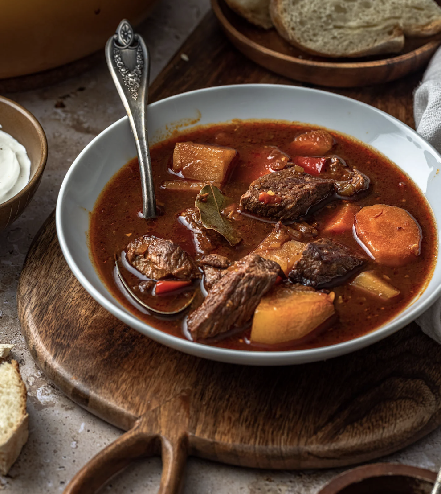

Recipe for Goulash

Hungarian Style Goulash
This version of Goulash is Hungarian-style. It is made to simmer for
hours It's delicious with bread, or on its own. It tastes like a thick, warm hug.
Ingredients:
- 3 Potatoes
- 4 Carrots
- 5 Mushrooms
- 1 Cup beef stock
- 1 lb chuck stew beef
- 1/2 cup flour
- salt & pepper
- 16 oz can diced tomatoes
Steps:
- Coat the meat with the flour.
- Sear the meat.
- Add the sliced veggies to the pot.
- Fill the pot with water and stock until barely covering the veggies.
- Simmer for 4 hours.
- Serve with bread or on its own.